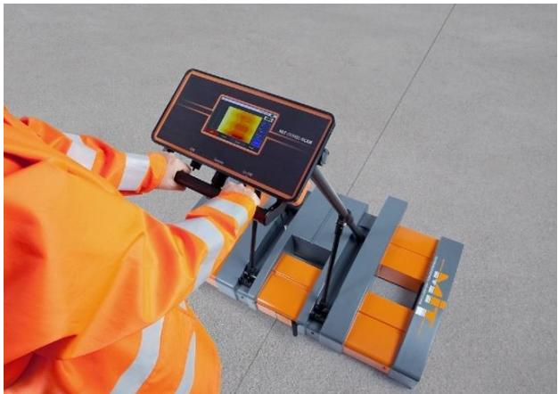
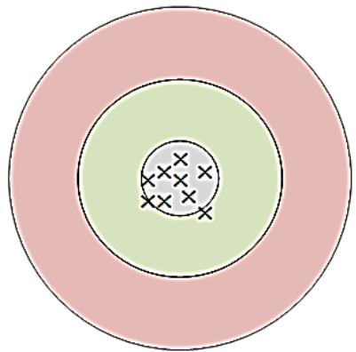

Material Testing
Material testing is the systematic application of controlled forces, deformations, or environmental conditions to a specimen in order to quantify its fundamental physical and mechanical properties. Standardized laboratory procedures define how samples are prepared and measured to reduce variability and produce reliable data that can be compared across different projects [1] [2]. Testing is conducted through systematic sampling of production lots, where representative specimens are evaluated to determine statistical quality indexes and verify compliance with engineering specifications [3] [1].
Material Testing unifies a suite of methods that verify concrete meets structural and regulatory requirements through empirical data. Concrete Strength quantifies the hardened material’s capacity to withstand loads, ensuring compliance with engineering specifications. Concrete Durability evaluates how well concrete retains performance over time under aggressive environmental stresses. Maturity Methods offer a nondestructive way to assess in-place strength by correlating temperature history with material development for real-time verification. Concrete Standards establish the unified framework of test procedures and acceptance criteria that governs these evaluations, covering fresh-state workability, mechanical properties, and long-term resilience. Concrete Testing provides the essential empirical data on physical and mechanical properties required to verify that material performance meets structural integrity standards.
Sources (4)
Sub-concepts (6)
Key findings
- Material testing programs evolved into multi-stage processes that integrate laboratory pre-qualification with rapid field acceptance tests conducted at actual site temperatures to detect mixture-specific problems [3].
- Concrete performance evaluation shifted from relying on single pass/fail limits to longitudinal recording of baseline data and expert interpretation of deviations, recognizing that acceptable parameters vary by system and environment [3].
- Thermal monitoring via semi-adiabatic calorimetry emerged as a cross-cutting diagnostic tool that provided early insight into hydration kinetics and flagged incompatibilities before conventional strength or durability tests were completed [3].
- Maturity methods gained traction for assessing in-place strength to facilitate traffic opening, yet remained supplemental decision tools rather than replacements for direct compressive or flexural strength acceptance testing [3].
- Effective material testing required converting large datasets into rapid, actionable knowledge by fusing qualitative observations with quantitative measurements from real-time plant monitoring and tightly controlled certification protocols [1].
- The field adopted statistically driven acceptance criteria using averages of consecutive strength tests and control-chart limits to align test confidence with design expectations while balancing rapid production demands [1].
- Reliable testing outcomes depended on rigorous specimen handling, independent equipment calibration checks, and trained personnel, as accreditation alone did not guarantee procedural compliance or result accuracy [1].
- Test consistency was heavily influenced by ambient conditions, prompting specific procedural safeguards such as conducting load-transfer testing below 70°F to limit measurement error in deflection values [2].
Testing Methodologies and Quality Control
Evidence: 4 reports (2 primary)
Testing methodologies involve the systematic application of controlled forces or environmental conditions to specimens in order to quantify fundamental physical and mechanical properties such as strength, stiffness, and durability [3]. These procedures are categorized into destructive methods that load specimens until failure and nondestructive techniques that infer material condition without causing damage [2]. Quality control relies on standardized laboratory protocols to ensure repeatability, utilizing systematic sampling of production lots to statistically evaluate compliance with specification limits [1].
The figure below illustrates various non-destructive testing options utilized for quality control thickness measurements.

Non-destructive testing options for QC thickness testing. [1]The image displays a worker in high-visibility safety gear operating the MIT-SCAN-T3 equipment on a paved surface to perform non-destructive quality control thickness testing. This device detects the distance between the scanner and buried metal targets, providing an accurate measurement of pavement thickness without damaging the surface.
Research problem — Current material-testing practices for concrete joints rely on indirect metrics that fail to capture the specific air-void characteristics required for durability, necessitating a shift toward responsive, real-time indicators like formation factor and Super Air Meter values [4]. Inconsistent execution of testing programs and reliance on surrogate strength correlations undermine data reliability, while the absence of validated nondestructive methods for in-place strength assessment delays construction decisions and compromises quality control [3]. Testing is frequently treated as a passive compliance exercise rather than an active component of real-time quality assurance, resulting in delayed corrective actions and unchecked material drift due to insufficient validation regimes for aggregates and equipment [1]. Obtaining reliable field-scale data is hindered by the prohibitive costs and destructive nature of traditional methods, alongside systemic issues with equipment readiness that allow measurement errors to conceal pavement distress [2].
The following figure illustrates a practical application of these testing principles.
 A plot of compressive strength versus maturity for concrete. [2]
A plot of compressive strength versus maturity for concrete. [2]
The figure displays a curve showing the relationship between compressive strength and maturity, with data points indicating an increase in strength as maturity increases. This plot illustrates the time-temperature versus strength relationship required to assess the strength of in-place concrete pavements using maturity methods.
State of the art — Modern material testing has evolved from isolated laboratory pre-qualification and pass/fail acceptance checks into an integrated, data-driven quality management framework that links standardized procedures to real-time process control [3] [1]. The field is shifting toward metrics that directly reflect mixture microstructure, such as the formation factor and Super Air Meter number, which enable routine daily quality-control checks on-site rather than relying solely on traditional water-to-cement ratio controls [4]. Statistical process control underpins this workflow by using control charts to monitor key attributes and trigger proactive corrective actions, balancing the trade-off between reduced risk of out-of-control material and the need for frequent adjustments [1].
The following figure illustrates a sample control chart used to monitor concrete unit weight as part of this statistical process control workflow.
 Sample control chart: concrete unit weight [3]
Sample control chart: concrete unit weight [3]
The figure displays a statistical process control chart tracking the variation of concrete unit weight across sequential sample IDs. The chart visualizes the application of statistical process control by plotting unit weight against upper and lower control limits defined in standard deviations.
Findings from the reports
- Evaluated the Super Air Meter (SAM) as a superior diagnostic for freeze-thaw durability, demonstrating that SAM numbers below 0.20 lb/in² reliably indicate acceptable air-void systems with stronger correlation to durability factors than traditional spacing factor measurements [3].
- Observed a lack of clear correlation between conventional aggregate abrasion test results and the actual abrasion resistance of concrete, prompting reliance on direct ASTM-based concrete abrasion procedures to capture wear performance accurately [3].
- Identified rheological monitoring as an emerging capability for real-time insight into silicate hydration processes, offering a potential complement to existing maturity and strength assessment methods [3].
- Demonstrated that material testing programs function effectively as multi-stage processes requiring laboratory pre-qualification followed by rapid field acceptance tests conducted at actual plant or site temperatures to detect mixture problems reliably [3].
- Reported that maturity methods are gaining traction for assessing in-place strength and traffic opening decisions but cautioned against using them as a replacement for compressive or flexural strength testing during formal acceptance [3].
- Showed that semi-adiabatic calorimetry provides early insight into hydration kinetics and flags material incompatibilities before conventional strength or durability tests are completed, supporting a shift toward integrated real-time quality control [3].
- Measured that broader regulatory limits provide operational leeway in airfield pavement testing, while tighter industry guidelines expose subtle quality shifts and aggregate variability that can affect long-term performance [1].
- Found that effective material testing requires converting selected data into rapid, actionable knowledge through the fusion of qualitative observations and quantitative measurements, rather than accumulating large datasets without analysis [1].
- Identified specimen handling, particularly for flexural-strength beams, as a persistent source of error that necessitates rigorous training, strict preparation protocols, or substitution with compressive-strength routes to ensure reliable results [1].
- Established that accreditation alone does not guarantee reliable testing outcomes, requiring independent checks on equipment calibration and procedural compliance alongside statistically driven acceptance criteria [1].
Novelty & rigor — Research introduces functional field indicators, such as electrical resistivity-derived formation factors and Super Air Meter numbers, to replace traditional water-cement ratio specifications for more direct quality control [4]. Novel testing protocols include dynamic workability indices for stiff mixtures and continuous risk-based monitoring systems that fuse real-time diagnostics with statistical acceptance criteria to identify material incompatibilities early [3] [1]. Methodological rigor is ensured through strict adherence to accredited laboratory standards, controlled environmental conditions, and the use of calibrated nondestructive equipment to maintain reproducibility across diverse testing scenarios [3] [1] [2].
The following figure illustrates a common nondestructive testing method used to measure these electrical properties.
 Wenner resistivity test [3]
Wenner resistivity test [3]
The image displays a cylindrical concrete specimen resting on a black support base, with a handheld digital meter positioned directly above it. Four metal probes extend from the bottom of the meter and make contact with the top surface of the cylinder to measure electrical properties. This apparatus is used for a resistivity test, which measures conductivity based on the premise that charge is more readily transmitted through fluids in pores than through solid hydration products or aggregate. The test serves as a method to characterize the pore structure of concrete by determining values dependent on pore geometry and connectivity.
Reported values
| Parameter | Value | Context | Source |
|---|---|---|---|
| Air content adequate protection threshold | 5.0 percent | freeze/thaw conditions protection | [3] |
| Air content minimum | 4 percent | AASHTO PP 84 requirement | [3] |
| Air-void spacing factor maximum | 0.008 in. | spacing factors limit | [3] |
| air-void spacing factor threshold | 0.008 in. | associated with satisfactory freeze-thaw durability (correlated to SAM ≤ 0.20 lb/in²) | [3] |
| Box test height | 9.5 in. | cubic wooden box fill height | [3] |
| Box test score threshold | 2 | surface voids rating (inappropriate for slipform) | [3] |
| Coarse sand minimum retention | 15 percent | Tarantula curve best results for slipform placement | [3] |
| Critical saturation percentage | 85 percent | time to reach critical saturation calculation | [3] |
| beam specimen mold length excess | 2 in. | minimum requirement for beam specimen mold length relative to depth | [1] |
| beam specimen width-to-depth ratio limit | 1.5 | maximum ratio of width to depth of a beam specimen | [1] |
| CF action limit | ±3.5 | FAA | [1] |
| CF action limit | ±5 | UFGS Table 18 | [1] |
| CF limit | ±2.5 | TSPWG reference | [1] |
| curing temperature range | 60° to 80°F | temperature immediately adjacent to specimens during curing | [1] |
| PWL for flexural strength | 100 | Percentile Within Limits (PWL) for flexural strength test results | [1] |
22 more distinct values omitted here; the full span-verified set is in the quantities sidecar.
Across the reviewed reports, material testing methodologies are evolving from static laboratory assessments toward integrated, real-time quality control systems that combine rapid field diagnostics with longitudinal statistical monitoring. While traditional aggregate-based predictions and single-point strength tests remain in use, there is a collective shift toward using air-void metrics like the Super Air Meter for durability and maturity methods as supplemental decision tools to accelerate field acceptance. Effective quality control now requires balancing broader regulatory limits with tighter industry guidelines through continuous monitoring of both fresh-mix variability and hardened-property compliance to detect subtle shifts in material performance. [3] [1]
Implications — Quality control must evolve from isolated laboratory checks into an integrated, data-driven process that spans the entire project lifecycle, balancing rapid field diagnostics with thorough prequalification to enable timely decision-making [3]. Practitioners should abandon universal acceptance criteria in favor of establishing mix-specific baselines and using statistical methods to manage risk, ensuring that testing intensity aligns with project value and failure consequences [3] [1]. Successful implementation requires disciplined personnel training, rigorous documentation of environmental conditions, and the strategic integration of real-time monitoring tools to bridge the gap between high-frequency sensor data and physical verification [3] [1].
The following figure illustrates how these integrated quality assurance and control activities function together within the testing framework.
 Integration of contractor QC and process control activities with QA and acceptance. [1]
Integration of contractor QC and process control activities with QA and acceptance. [1]
The figure illustrates a workflow for pavement construction that integrates data-driven analytics, testing, inspection, success evaluation, and final acceptance. It depicts the feedback loop where deficient material is identified during inspection and sent back to the paving stage for rework or removal. This process aligns with the concept of material testing by demonstrating how systematic sampling, testing, and inspection are used as part of quality control to monitor production processes and ensure the final product meets specified quality levels.
Limitations — Reliance on indirect tests or empirical correlations introduces uncertainty because these relationships are mix-specific and require fresh laboratory calibration to remain valid [3]. The absence of universal pass-fail thresholds means that testing outcomes must be interpreted in context rather than against a single standard, often requiring expert judgment [3]. Inherent variability in test results and the vulnerability of specimens to handling damage reduce the reliability of individual measurements, necessitating confidence limits [3] [1].
The figure below illustrates how test outcomes are evaluated against acceptance limits to determine whether they meet specific quality targets.

Test results falling within acceptance limits, test results showing consistent control but not optimally meeting target, and test results showing both consistency and quality meeting target (Cavalline et al. 2018). [1]The figure displays three concentric circular zones representing acceptance limits, with the outermost pink ring indicating a broad tolerance range. A central cluster of ‘x’ marks is contained within an inner circle, illustrating test results that are both consistent and meeting the target specifications.
Advanced Evaluation Techniques
Evidence: 1 report (1 primary)
Findings from the reports
- Identified that achieving reliable and repeatable measurements in material testing is hindered by practical constraints, particularly the sensitivity of results to ambient temperature and test location [2].
- Demonstrated that load-transfer efficiency (LTE) values vary depending on which side of a joint is loaded, necessitating the use of the lowest measured value for accurate assessment [2].
- Observed that ambient temperature significantly influences LTE results, leading to recommendations for conducting load-transfer testing below specific thermal thresholds to ensure data validity [2].
- Evaluated newer field equipment as capable of increasing operational efficiency and handling wider temperature ranges, though accuracy trade-offs persist due to factors like uncut tie wires degrading alignment readings [2].
- Revealed that traditional laboratory tests remain entrenched in practice despite known limitations, as practitioners prioritize pragmatic, regulation-driven methods over more scientifically rigorous assessments [2].
- Reported that empirical tests such as the California Bearing Ratio dominate due to simple equipment requirements and available correlation databases, despite lacking mechanistic insight into fundamental soil properties [2].
- Showed that falling-weight-deflectometer testing can identify subsurface voids through specific load-deflection line extrapolations and detect non-uniform support via corner-to-interior support ratios [2].
Reported values
| Parameter | Value | Context | Source |
|---|---|---|---|
| differential deflection across joint | 5 mils | limit for difference in deflections across a loaded joint or crack | [2] |
| load transfer testing temperature | 70°F | recommended condition for load transfer testing | [2] |
| measurement capacity | 200 or more joints | dowel bar placement measurement with MIT-SCAN2-BT in an 8-hour shift | [2] |
| measurement duration | 8-hour | shift for measuring dowel bar placement with MIT-SCAN2-BT | [2] |
| operating temperature range (maximum) | 122°F | MIT-SCAN2-BT device operating conditions | [2] |
| operating temperature range (minimum) | 23°F | MIT-SCAN2-BT device operating conditions | [2] |
| peak corner deflection | 25 mils | desirable limit for loaded joint or crack | [2] |
| penetration rate | 0.05 in. per minute | CBR test standard penetration speed | [2] |
| piston end area | 3 in2 | CBR test piston specification | [2] |
| sample diameter | 4 in. | Hveem Stabilometer cylindrical sample dimension | [2] |
| sample height | 2.5 in. | Hveem Stabilometer cylindrical sample dimension | [2] |
| testing temperature limit | 70°F | load transfer testing recommendation | [2] |
| void projection distance from origin | 2 mils | typical maximum projection when no void exists | [2] |
Implications — Practitioners must balance the need for rigorous, controlled testing conditions against the operational demands of large-scale field programs, often accepting reduced precision in exchange for efficiency [2]. The industry is shifting toward integrated regimes that combine nondestructive diagnostics with calibrated empirical models to overcome the variability and limited predictive power of legacy procedures [2].
Limitations — Advanced evaluation methods often face a trade-off between execution speed and physical insight, as faster field techniques may sacrifice accuracy compared to more rigorous but costly laboratory procedures [2]. Certain empirical testing approaches are limited by their sensitivity to specimen preparation and inability to measure fundamental material properties, restricting their applicability to specific conditions [2].
Related concepts
In this hierarchy
- Child: Concrete Testing
- Child: Concrete Durability
- Child: Concrete Strength
- Child: Concrete Standards
- Child: Material Testing
- Child: Maturity Methods
Related by shared evidence
- Aggregate Management — shares 4 reports
- Cement Chemistry — shares 4 reports
- Cementitious Materials — shares 4 reports
- Concrete Mixture Design — shares 4 reports
- Concrete Production — shares 4 reports
- Concrete Testing — shares 4 reports
- Cracking Mitigation — shares 4 reports
- Joint Maintenance — shares 4 reports
Similar topics
- Material Testing
- Concrete Production
- Cementitious Materials
- Quality Control
- Paving Operations
- Other
- Concrete Testing
- Concrete Strength
References
- Best Practices Manual: Quality Control and Quality Acceptance of Concrete Airport Pavement (2025)
- Concrete Pavement Preservation Guide (Third Edition) (2022)
- Integrated Materials and Construction Practices for Concrete Pavement: A STATE-OF-THE-PRACTICE MANUAL (2019)
- Guide to the Prevention and Restoration of Early Joint Deterioration inConcrete Pavements (2016)
Feedback on this page